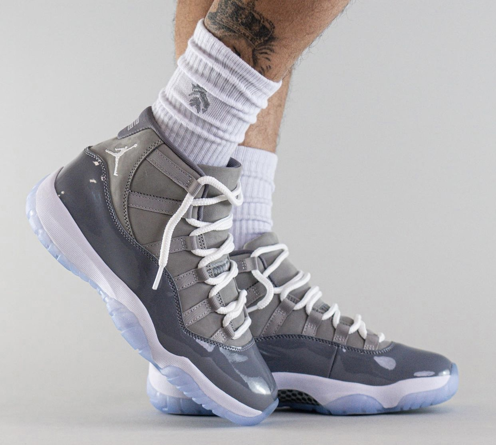

The Air Jordan 11 "Cool Grey," released in 2001 and later retroed in 2010 and 2021, is a stylish and highly sought-after sneaker known for its sleek design and premium materials. **Key Features:** - **Colorway**: This iteration features a striking Cool Grey upper, made from a combination of nubuck and patent leather, creating a sophisticated look. The iconic white midsole and icy blue translucent outsole add a fresh contrast. - **Design Elements**: The shoe maintains the classic silhouette of the Jordan 11, with the distinctive high-cut collar and mesh panels, which enhance breathability and style. The Jumpman logo is prominently displayed on the ankle. - **Comfort and Performance**: Equipped with responsive Air cushioning, the Jordan 11 offers excellent comfort, making it suitable for both basketball performance and everyday wear. - **Cultural Significance**: The "Cool Grey" colorway has become a staple in sneaker culture, often associated with Michael Jordan's legacy and his impact on the game. Overall, the Air Jordan 11 "Cool Grey" is celebrated for its timeless design, premium construction, and versatility, making it a favorite among sneaker enthusiasts and basketball fans alike.
